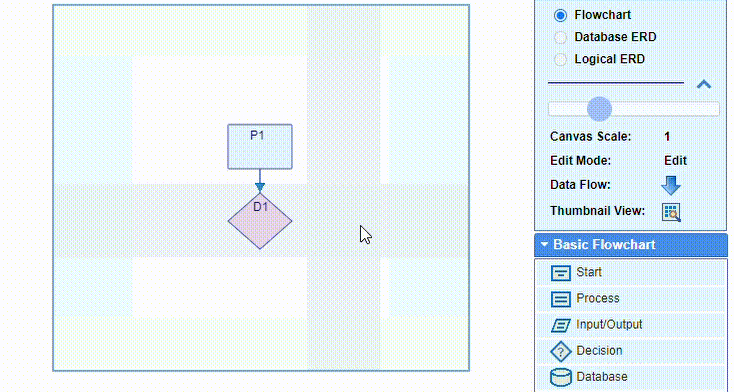

The Decision nodes have two outputs: YES and NO, and can accept multiple inputs.
The input(s) location is fixed at the top of the shape in a vertical layout or on the left
of the shape in a horizontal layout.
The positions of the outputs can be chosen by double-clicking the node. The popup box
offers six different options for the YES/NO outputs selectable by the arrow buttons in clockwise or
anti-clockwise direction:
